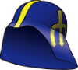

<h3>Swelmet tracker</h3>
    <p class="chatter">
      Which players are leading in the swelmet count?
    </p>

<% json.MarinersTracker_swelmet.sort((a, b) => b.times_received - a.times_received).forEach(function(s) { %>
    <div>
     <span class="name"><%= s.name %></span>
     <% for (var i=0; i < s.times_received; i++) { %>
      
     <% } %>
    </div>


<% }) %>